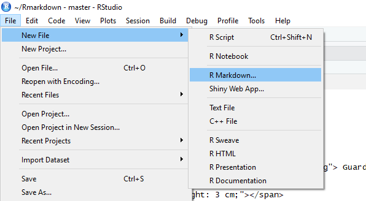

R Markdown es un sistema para análisis de datos reproducibles y publicación de "salidas" desde R, incluyendo documentos, presentaciones, libros, blogs, dashboards y sitios webs.

Carlos Neftaly Lozano A.
www.microbiostats.com
R Markdown es un sistema para análisis de datos reproducibles y publicación de "salidas" desde R, incluyendo documentos, presentaciones, libros, blogs, dashboards y sitios webs.
 Guardar y ejecuatar código.
Guardar y ejecuatar código.
 Generar reportes de alta calidad con el objetivo de ser compartidos.
Generar reportes de alta calidad con el objetivo de ser compartidos. rmarkdown y knitr.Rmd

.Rmd